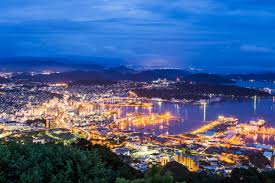

Nagasaki este un oraș cu o istorie fascinantă, cunoscut pentru impactul său asupra schimbărilor istorice ale Japoniei și pentru portul său internațional.
Top 10 Atracții din Nagasaki:
- Parcul Memorial al Păcii Nagasaki
- Templul Sofuku-ji
- Strada Dejima
- Turnul Inasa
- Muzeul Atomic Nagasaki
- Insula Hashima (Gunkanjima)
- Plaja Nagasaki
- Muzeul de Artă Nagasaki
- Castelul Nagasaki
- Parcul Urakami